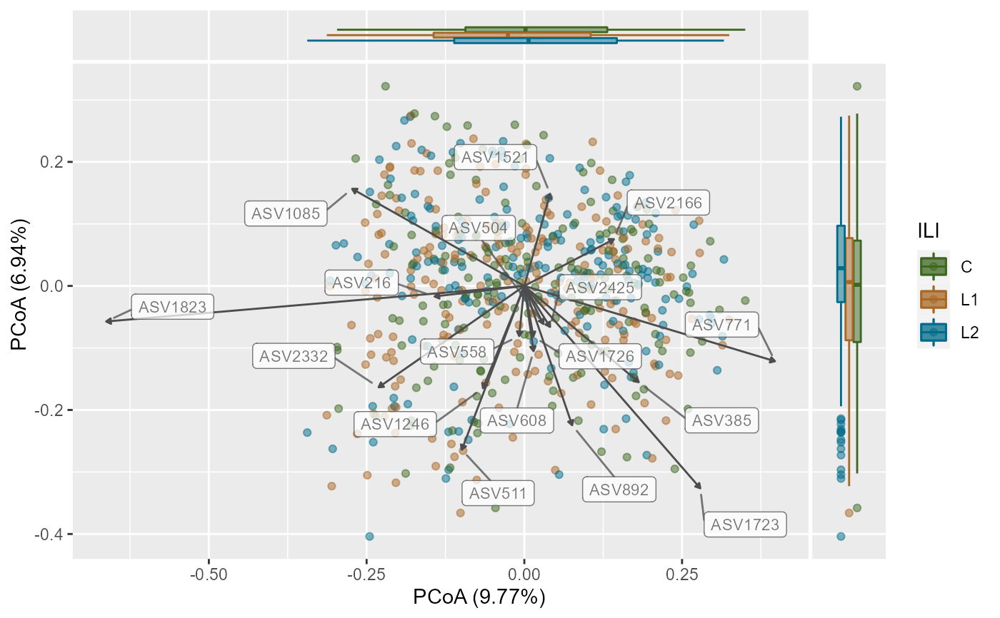

plotPCoA.RdPCoA plot
| x |
|
|---|---|
| group_var | A column in |
| ord_method | Ordination method, currently tested PCoA. |
| dist_method | Distance method, currently tested Bray-Curtis. |
| seed | Random seed number |
| cor_method | Correlation method. Default is |
| padj_cutoff | Cut-off for multiple testing. Default is 0.05. |
| padj_method | Method for multiple testing. Default is fdr. |
| arrows | Logical. If arrows for taxa with correlation to axis are to be plotted. Default is TRUE. |
| label_col | Color of labels. Default is grey30. |
| plot_centroids | Logical. To plot centroids or not. Default is TRUE. |
| add_side_box | Logical. To plot side boxplots or not. Default is TRUE. |
| axis_plot | Which axis to plot. Default is first two. |
| point_shape | Shape of the points. Default is 21. |
| point_alpha | Opacity of points. Default is 0.5 |
| verbose | Logical. Messages to print. Default is TRUE. |
| ... | Additional arguments to pass to vegan's adonis function. |
a ggplot2 object.
A Principal Coordinates Analysis for phyloseq-class object.
To visualize similarities/dissimilarities between samples in 2D ordination.
This function extends the phyloseq ordination plots to include
taxa that correlate with choosen axis and plots them along with a
side boxplot for comparing inter-sample variation within groups.
Shetty SA (2021). Data visualization for microbiome analytics. https://github.com/microsud/biomeViz
Sudarshan A. Shetty
#> Warning: package 'ggside' was built under R version 4.1.1#> #> #>ps <- FuentesIliGutData %>% microbiome::transform("compositional") %>% mutateTaxaTable(FeatureID = taxa_names(FuentesIliGutData)) plotPCoA(x =ps, group_var = "ILI", ord_method = "PCoA", dist_method = "bray", seed = 1253, cor_method = "spearman", verbose = TRUE, padj_cutoff = 0.05, padj_method = "fdr", arrows = TRUE, label_col = "grey30", plot_centroids = TRUE, add_side_box = TRUE, axis_plot = c(1:2), point_shape = 21, # point_shape point_alpha = 0.5) + scale_color_manual(values = c("#3d6721", "#a86826", "#006c89")) + scale_fill_manual(values = c("#3d6721", "#a86826", "#006c89"))#> #>#> Warning: Second of the choosen axis in `axis_plot` has no taxa satisfying criteria to plot